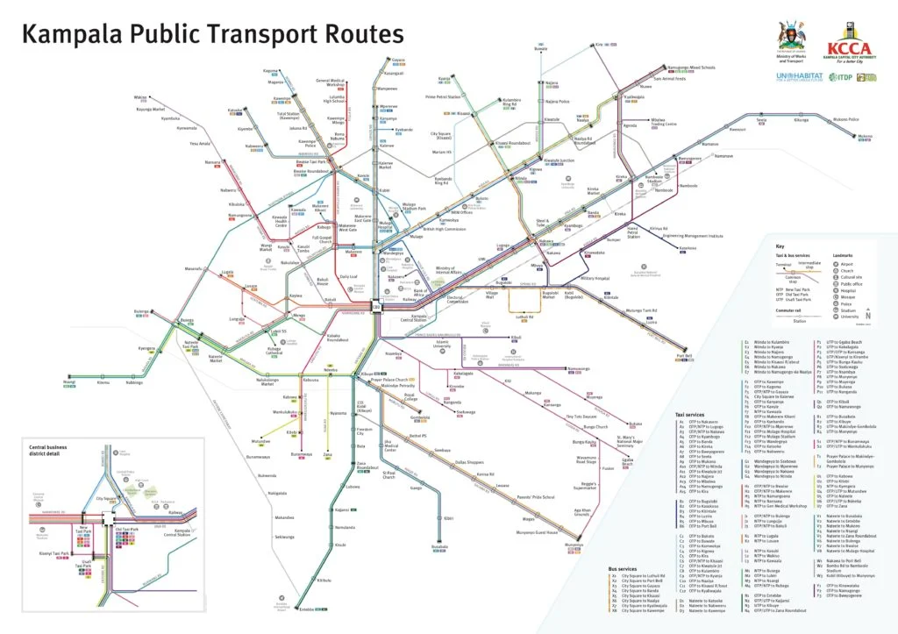

Kampala, Uganda
Route directory
Compare the journey, service type, estimated fare, and typical hours before you set off.
Plan with the details
Everyday connections
Search by destination or stage. Fares and schedules are indicative and may change.

Loading route directory...
Routes could not be loaded. Please refresh the page and try again.
Fare figures are illustrative student-project estimates, not an official price list. Confirm current fares, routes, and departure stages with the operator.